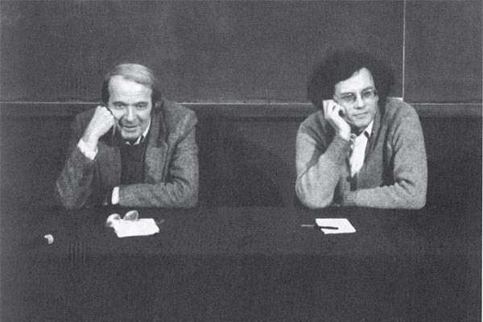

|
La Alta Magia de Lacan, Deleuze y Guattari
Autor : yemeth |
|
En ocasiones, la mejor información sobre la alta magia y las hendiduras que crea sobre el tejido de la realidad no se encuentra en oscuros tratados medievales o en textos internos de dudosas organizaciones, ni tan siquiera en textos escritos por gente que reconoceríamos como “magos” a partir de las preconcepciones con las que también nosotros juzgamos el mundo que nos rodea.
Existen diversos nombres en la filosofía occidental cuyas ideas se entrelazan con los intereses de quienes buscan deconstruirse a sí mismos y a lo que conocemos como “real”. Pero quiero centrarme en este artículo en tres de ellos, provenientes de la filosofía francesa de la segunda mitad del Siglo XX.

Jacques Lacan y la creación del sujeto como ente
El sendero iniciático puede tomarse como un caminar opuesto al flujo esclavizante que avanza junto a nuestro devenir vital. Revertir ese flujo, desaprender lo aprendido y romper lo condicionado, es un modo bastante apropiado de caracterizar este camino.
Para el filósofo francés Jacques Lacan, a menudo considerado como el segundo personaje en importancia en el psicoanálisis después obviamente de Sigmund Freud, y que corrige, generaliza y llega incluso a dar la vuelta a su pensamiento, el sujeto no existe como ente hasta etapas avanzadas del desarrollo del niño.
A partir de una primera etapa en la que el niño no se identifica con nada de lo que percibe en una suerte de “falta-de-ser” primordial, es decir, partiendo de un momento en que carece de la idea de sí mismo, llegamos a una etapa, la del “espejo”, en la que se va a identificar con una imagen de sí mismo, aquella de su reflejo, que está fuera de él.
El espejo es una metáfora. Lo que quiere decir, es que llega un momento en que el niño se identifica con una imagen de entre todas las que forman parte de sus percepciones. Una porción reducida de su experiencia será “yo” y acabará incluso llamándola por ese nombre de “yo”. Pero según Lacan, esta identificación es profundamente alienante -podríamos decir, nuestro primer error-, puesto que eso condena a la persona a existir fuera de sí mismo, y a buscarse también fuera de sí.
Los problemas no se quedan aquí, y una consecuencia de la división artificial de la percepción entre “yo” y “lo Otro” (todo lo que no soy yo) genera esa cosa tan humana que llamamos “deseo”, que no es más que buscar incesantemente aquello que nos complete. Las pretensiones del deseo son sin embargo inútiles. No podemos completarnos, porque no nos falta nada, somos nosotros quienes sobramos, porque no somos nada. El problema es que nos hemos identificado con una imagen externa, hemos llamado “yo” a una parte de nuestra experiencia, y al hacerlo nos sentimos alienados, como que nos falta algo. Y todo este terrible malentendido nos va a llevar a intentar hallar mediante el deseo aquello que nos devuelva a un inexistente estado de completitud, imposible dado que nosotros mismos no somos nada.
¡Y todavía se pone la cosa peor!
Porque hasta ahora solo estábamos jugando con dos personajes, “yo” y “lo Otro”, que Freud había identificado burdamente como el niño y la madre pero cuya naturaleza más profunda consiguió extraer Lacan. Y va a entrar en juego la figura freudiana del padre, que es en realidad más bien el propio orden patriarcal; aquello que ordena y ata, que estructura y domestica “lo Otro”.
Un problema aún peor que el deseo para la percepción que divide al mundo entre “yo” y “lo Otro” es la imprevisibilidad de ese gran Otro. ¿Qué quiere eso que no soy yo? ¿Cómo lo manejo? ¿Cómo aplaco su ira? ¿Cómo puedo predecir su comportamiento?. Si la experiencia de vida, lo que le sucede al yo, puede traerle desde lo bello al horror, ¿cómo adquirir alguna seguridad sobre el mundo? ¿Cómo evitar la brutal ansiedad de la incertidumbre?
A cubrir esa incertidumbre viene el orden patriarcal, toda la estructura social, cultural, autoritaria, que va a darnos la tranquilidad que necesitamos los débiles humanos. Todo un entramado que nos va a insertar en una sociedad de la disciplina, regulada en horarios y en normas y en objetivos de producción. De hecho tan regulados en cada aspecto de nuestras vidas, que vamos a hacernos dependientes de ese orden. Y no se trata de una cuestión que suceda meramente en el mundo de las ideas. Si una persona edipizada se le rompe ese orden -a una persona normal, “cuerda”-, si se le desprende repentinamente aquello que lo ata, va a encontrarse con una palabra temida y convenientemente medicalizada: la psicosis.
Pero lo que podría parecer una maldición, es en realidad la salida.
La cura psicótica
No puede decirse que Lacan estuviera convencido plenamente de que esta o la otra fuera la verdadera manera de solucionar los problemas de la condición humana y su inserción en sociedad. Sin embargo, en más de una ocasión propuso la psicosis como posibilidad para salir del callejón sin salida en el que nos encontramos.
La ventaja con la que operamos, es que la estructura con la que hemos recubierto la caótica otredad que parece rodearnos, es tremendamente frágil. Jacques Lacan llamó “Nombre del Padre” al clavo que la mantenía consistente y atada. El Nombre-del-Padre es aquello que aparenta detener la cadena de los significantes del inconsciente, las producciones incesantes del inconsciente, y construye un significado estable, una realidad atada que parece tener un sentido y una narrativa coherente para describirla.
También habló Jacques Lacan acerca de la “forclusión del Nombre-del-Padre”, que no es más que la expulsión de este mecanismo que entorpece las formaciones del inconsciente, que atasca las máquinas deseantes. La expulsión del Nombre-del-Padre del universo simbólico del sujeto, es el mecanismo que da pie a la psicosis.
¿Qué es el fenómeno psicótico? La emergencia en la realidad de una significación enorme que parece una nadería –en la medida en que no se la puede vincular a nada, ya que nunca entró en el sistema de la simbolización- pero que, en determinadas condiciones, puede amenazar todo el edificio.
[Seminario III]
Por supuesto, caer inesperadamente en la psicosis puede resultar un problema. En esencia, en la psicosis el mundo se desata y nuestra narrativa acerca de su funcionamiento deja de funcionar. De pronto nos hallamos frente al mundo tal como es; caótico y terrible, carentes de idea alguna sobre qué va a hacer con nosotros, y de mecanismos para que haga lo que nosotros queremos.
Algo así es terrorífico, así que la reacción automática que tenemos los débiles humanos consiste en empezar a tejer historias alrededor de esa otra cosa que no somos nosotros. Historias místicas, historias paranoicas y terroríficas. Todo porque somos incapaces de soportar un mundo sin orden, una vez que nos hemos acostumbrado en exceso a él.
Además, cuando conseguimos expulsar al Nombre-del-Padre, un proceso que en alta magia conocemos como Iniciación, nos vamos a encontrar con una dificultad añadida. Y es que la realidad va a comportarse de una manera muy muy rara.
Según la teoría de Jacques Lacan, cuando cortocircuitamos la narrativa acerca de la realidad en el proceso psicótico, el inconsciente se va a manifestar y va a regresar a nosotros a través de lo Real. Eso de “Real” tiene más truco del que parece, y es que Lacan aquí se refiere específicamente a nuestra experiencia subjetiva de la realidad. No se moja acerca de si se producen cambios objetivos, pero sí afirma que los contenidos de nuestro inconsciente (lo que Jung llamaría la Sombra) van a venir con dientes afilados a por nosotros en nuestra experiencia subjetiva de lo real. Cualquiera que haya atravesado esta experiencia, la “Peligrosa Capilla” de Robert Anton Wilson, sabe que las sincronicidades se acumulan para traernos una experiencia de lo real que contiene nuestras peores pesadillas enterradas, los contenidos más profundos y terribles de nuestro inconsciente. Tal es el precio a pagar por la represión del inconsciente bajo la Ley y el Orden.
Por supuesto, podemos sobrevivir a esta prueba de fuego. Y si lo hacemos será el primer paso en un sendero muy muy largo que continuará deshaciendo los nudos presentes en nuestras cabezas. Pero al menos ya habremos cruzado el umbral.
Más allá de esta experiencia, Jacques Lacan se aventura con pies de plomo. Es perfectamente consciente de que la cosa no se acaba aquí, puesto que aún estamos falsamente identificados con un “yo” que no somos, con la percepción falsamente dividida entre yo y lo que yo no soy. Así que también da alguna receta para lograr terminar con tal división. Obviamente son inútiles los esfuerzos por perseguir el objeto del deseo, el elusivo “objet a”, el objeto del deseo inalcanzable que nos haría completos si no fuera porque cada vez que lo alcanzamos se desplaza a otra cosa.
Una curiosa opción para aproximarse a deshacer la división de la percepción entre lo que yo soy y lo que no que plantea Lacan, es redirigir nuestra sexualidad hacia alguna representación de lo Otro, de aquello que yo no soy. Un mecanismo que también se plantea dentro de la alta magia, y que planteaba por ejemplo David Shoemaker en su sección de Living Thelema como uno de los mejores mecanismos para ayudarse en el sendero post-iniciático hacia el Conocimiento y la Conversación del Sagrado Ángel Guardián.
Antes de continuar hablando un poquito de nuestro segundo invitado de la noche, plantear una última cuestión que se deriva del pensamiento de Jacques Lacan. Y es que la idea de que en mecanismos como la psicosis se manifiesta nuestro inconsciente sobre lo Real, puede sugerirnos cómo funciona la magia hasta en sus expresiones más sencillas como serían los sígiles en Magia del Caos; la inserción de un contenido en el inconsciente (el símbolo a ser manifestado, codificado de un modo que resulte ‘comprensible’ por el inconsciente) mediante el uso de un método de gnosis (que podríamos tomar como una mini-psicosis en el trance post-lingüístico al que lleva) para grabarlo y que se manifieste de vuelta a través de nuestra percepción subjetiva de la realidad. O también en este aspecto podríamos citar a Deleuze y Guattari, “lo que está repudiado en lo simbólico debe reaparecer en lo real bajo la forma alucinatoria”.

Gilles Deleuze y Félix Guattari: Líbido, Numen, Voluptas
“El proceso esquizo es un viaje iniciático, una experiencia trascendental de la pérdida del Ego”
Para Deleuze y Guattari, no hay medias tintas ni la cautela propia de Jacques Lacan. Estamos atrapados por las estructuras del Edipo, por el triángulo niño-madre-padre, la realidad atada y bien atada por un orden asfixiante. Y la única salida es derribar ese orden, escapar a un estado pre-edípico en el que Ley y Orden no sean más que un mal recuerdo de un sistema esclavizador que además habríamos de derribar al completo.
Aquello que encontramos en la psicosis, primero como terrorífico y luego como bendición, los guardianes Menor y Mayor del Umbral para Steiner, la Sombra que se convierte en un Ángel, nuestro Sagrado Ángel Guardián, es una perspectiva mística a la que Deleuze y Guattari van a dar la vuelta. Y es que es para ellos ese Dios inmanente es un “cuerpo sin órganos” que se vuelca sobre la producción deseante y se la apropia, una superficie encantada que se atribuye las fuerzas productivas y órganos de producción consiguiendo crear la ilusión de que es ella quien los mueve. Un equivalente místico para los autores a lo que el Capital hace con las fuerzas productivas, reino indiferenciado que subyace al mundo de las apariencias: El huevo de los Dogón en el que yacen los gérmenes de las cosas que pueden ser en el mundo.
Así pues, lo propiamente divino no es para ellos este cuerpo sin órganos, este sustrato fluído sobre el que encontramos cosas que se mueven a distintas velocidades (una montaña se mueve despacio, las palabras pueden moverse muy rápido). Lo “divino” si es que pudiera usarse tal término, sería la propia energía de disyunción que llamarán Numen (palabra que sugiere divina voluntad, divina presencia), la energía que pone en marcha aquello que se sincroniza y que suplementa con una economía de la circulación a la economía de la producción, esto es, que enruta nuestras realidades. Una energía, Numen, que en último término surge de nosotros, dotados de la capacidad de configurar la realidad. El cambio que la psicosis-iniciación produce en las estructuras del deseo desata la transformación de la energía Líbido a este tipo de energía que aumenta notablemente nuestra capacidad de generar realidades, aunque se las apropie el cuerpo sin órganos fingiendo que tiene un carácter divino, fingiéndose Dios, aparentando mediante un efecto óptico que todo se debe a él.
Y es que mientras que para el sujeto plenamente edipizado el deseo consiste en querer cosas para sí como buen cliente en frenesí de compras, el esquizo que se ha liberado del yugo que paraliza las máquinas deseantes del inconsciente posee un deseo cualitativamente muy diferente al del edipizado, un deseo-producción que choca con los mecanismos de producción forzada y le hace comprender que “las fábricas son prisiones, no se parecen a prisiones, lo son.”
El deseo del esquizo no quiere cosas para sí mismo. Su deseo es deseo-producción. Quiere crear realidades. Sabe que no puede producir tales realidades más que mediante mecanismos externos entre los que se encuentra la casualidad/sincronicidad que en magia ponemos a nuestro servicio, el movimiento de los flujos que recorren el cuerpo sin órganos, pero con eso le basta para entender el poder que tienen sus propios deseos para manifestar las cosas. Su deseo es deseo-producción, y en él se enfrenta a la represión de un sistema que quiere esclavos que obedezcan y se encierren en las realidades creadas para ellos, y no esquizos que vayan por ahí creando las suyas propias. Encuentra el esquizo que el sistema de represión general es lo único que puede realmente convertirlo en un loco, y solo cuando lo perturba lo bastante como para convertirlo en perturbado. ¡El esquizo no es un loco! Los locos son los “normales”, los que siguen edipizados. La locura es la alucinación consensuada a la que los hombres están atados, y el esquizo-iniciado solo está loco cuando lo reprimen. El esquizo es reprimido porque el deseo amenaza a la sociedad, porque su deseo-producción es revolucionario, porque en lugar de huir a otra realidad, el esquizo en la manifestación de ese deseo perturba el orden de la realidad dominante.
Podría uno tomar esto como un creciente impulso irrefrenable hacia aquello que en algunos círculos se denomina “Voluntad Verdadera”, así como el inevitable devenir que algunos advierten acerca del Iniciado que ya no tiene marcha atrás, que ya no podrá hacer otra cosa que seguir el camino que ha abierto en su cabeza, “vayamos más allá, todavía no hemos desmantelado lo suficiente el yo”. El esquizo necesita vivirse, vivir su deseo-producción, más allá de las restricciones que su orden social le ha tejido. Cualquier otra cosa lo haría enloquecer.
Pero en el estado lunar posterior a la Iniciación, el gozo de uno mismo es imposible “para un sujeto que no puede orientarse más que a través de las disyunciones de una superficie de registro”. Las ‘pistas’ que otorgan unos reflejos lunares que se coagulan ocasionalmente en la superficie de lo percibido no bastan. Más allá de los vaivenes en su relación con una realidad que parece cobrar vida a su alrededor, debe designar “una nueva alianza entre las máquinas deseantes y el cuerpo sin órganos, para el nacimiento de una nueva humanidad o de un órgano glorioso”.
La alianza entre el Iniciado y su Ángel, entre las máquinas deseantes del esquizo y el cuerpo sin órganos, manifiesta “un poder solar” según Deleuze y Guattari, una máquina que produce “cantidades intensivas”, energía que no es ya ni Líbido ni tampoco Numen como energía que mueve las disyunciones, que estructura las coincidencias, sino un tercer tipo llamado Voluptas, que es síntesis conectiva en lugar de la síntesis disyuntiva que era el Numen. De las fuerzas de atracción y repulsión, afirman los autores, surgen estos elementos intensivos que llevan a exaltaciones casi insoportables.
En la celebración nupcial de la nueva alianza, este nuevo nexo entre las máquinas deseantes y el cuerpo sin órganos, perdido en la “fuerza solar” de su repentina densidad, el cuerpo completo devora en placer autoerótico las “cantidades intensivas” liberadas en el proceso que transforma la energía de Numen a Voluptas, un “yo siento” previo a la relación sujeto/objeto, previo a su vez a las narrativas y a los discursos que puedan trazarse sobre la arena de la realidad.
“Así es como debería hacerse. Alójate en un estrato, experimenta con las oportunidades que ofrece, encuentra un lugar ventajoso en él, encuentra movimientos potenciales de desterritorialización, posibles líneas de vuelo, experiméntalas, produce conjunciones de flujo acá y allá, intenta un contínuo de intensidades segmento a segmento, ten un pequeño solar de nueva tierra en todo momento. Es mediante una relación meticulosa con el estrato que uno tiene éxito liberando líneas de vuelo, causando que flujos conjugados pasen y escapen y traigan intensidades contínuas para un cuerpo-sin-órganos”.
Por supuesto, esto no es más que una pequeña introducción al pensamiento de los autores mencionados, cuya obra es inmensa. Muchas cosas están simplificadas, aunque he hecho todo lo posible para permanecer fiel a su espíritu. En todo caso, espero al menos que sirva como una introducción a una serie de aspectos de su filosofía particularmente relevantes para quienes se encuentren interesados en el camino de la alta magia.
|
|

|  RSS
RSS